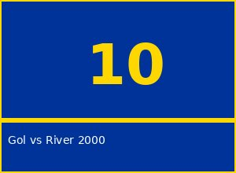
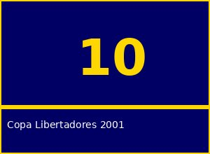
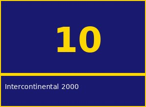

| Inicio | Galeria de Fotos | Libro de Mensajes |

|
Debut en Boca Juniors - 1996
El comienzo de la leyenda |
 Gol vs River Plate - 2000
Superclasico inolvidable |
 Copa Libertadores - 2001
Tiro libre historico |
 Intercontinental 2000
Humillando al Real Madrid |

|
Seleccion Argentina
Orgullo nacional con la 10 |
Ultimo Tango en La Bombonera
El adios del maestro |
Tiro Libre Magistral
La zurda de oro |
Despedida - 2014
Gracias por todo, Roman! |
|
|
|---|
|
Esta galeria reune los momentos mas emblematicos de la carrera de Juan Roman Riquelme. Desde su debut en 1996 hasta su emotiva despedida en 2014, cada imagen cuenta una historia.
|